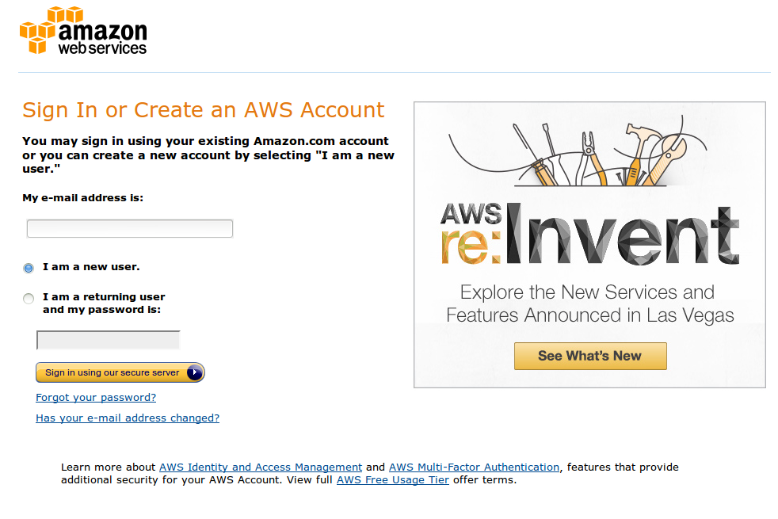
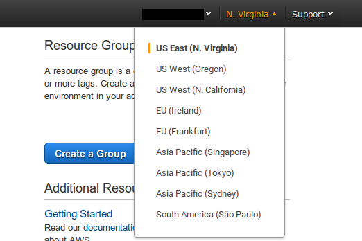
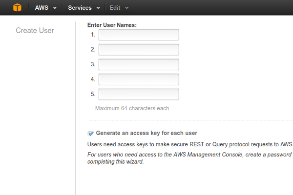
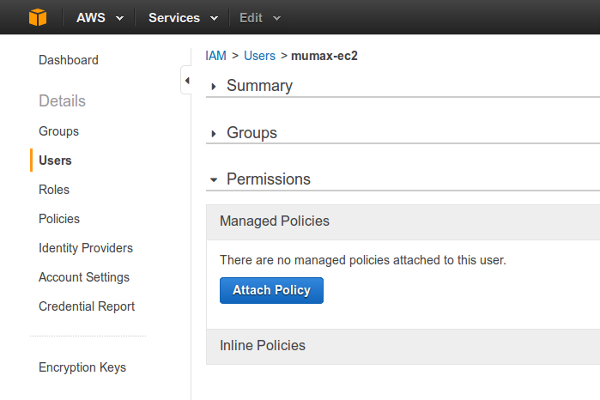
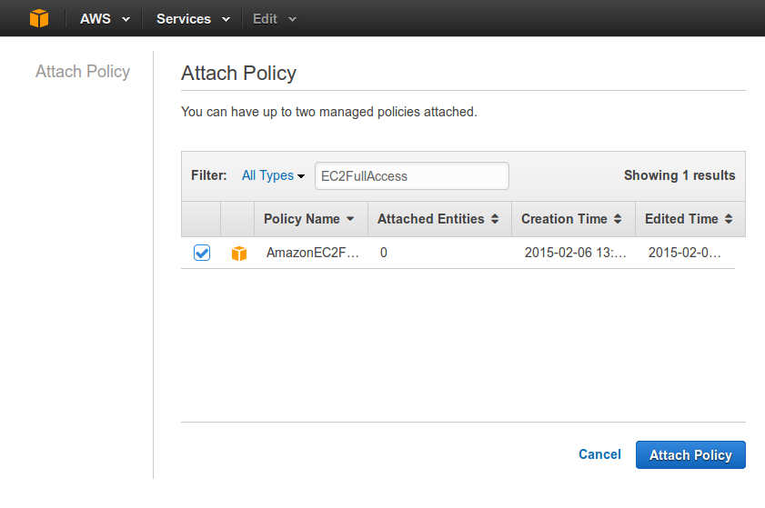

Setting up AWS¶
Instructions for setting up your Amazon Web Services (AWS) account to use with MuCloud are provided, which follow the installation step.
Making a user¶
Begin by signing up for an Amazon Web Services account.
After your account has been created, open the AWS Console.

Since the Amazon Machine Image (AMI) for MuCloud is in the US East (N. Virginia) region, choose that region in the upper right hand dropdown.
Choose IAM (Identity and Access Management) > Users > Create New Users.
Create a user “mucloud” (leave “Generate access key for each user” checked). Show the User Security Credentials, and copy the “Access Key ID” (AccessID) and “Secret Access Key” (SecretKey) into the MuCloud config.ini that came with the latest release.
Download the credentials and keep them in a safe place. Close to return to the Users menu.
Under Users > mucloud, Attach User Policy.
Search and select “AmazonEC2FullAccess”. Attach this policy to the “mucloud” user.
Now your “mucloud” user has been created and has full permission to use EC2, without allowing access to any other AWS services for security reasons.
Getting a private key¶
From the AWS Console, open up EC2.
Choose Key Pairs > Create Key Pair. Create a key pair with name “mucloud”, and update config.ini (PrivateKeyName) with this name.
Download the .pem file and save it to a safe place. On Linux and MacOSX change the permissions of the .pem file to prevent others from reading it.
chmod 500 mucloud.pem
Update config.ini with the path of the .pem private key (PrivateKeyFile). Now you have a private key with which you can connect to your instance with SSH.
Creating a security group¶
From EC2, choose Security Groups > Create Security Group.

Set the security group name to “mucloud”, and update config.ini (SecurityGroups) with this name. A description is required by AWS. On the Inbound tab > Add Rule > “Type: SSH”.
For the best security, choose “Source: My IP”. Note that if your IP changes, you will have to edit the security group again to update the IP. Alternatively “Source: Anywhere” can be used.
Verify your image¶
The Image setting in config.ini specifies the Amazon Machine Image (AMI) that GPU instances are created from. Check the release page to ensure that you have the latest AMI for your version of MuCloud. The public AMIs are only avalible in the U.S. East region. Advanced users can make their own custom AMIs to extend the features of MuCloud or copy them to a different region.
After you checked that you have the latest AMI, your AWS account has been set up properly and your config.ini file has been updated. The next step is to start using MuCloud, or follow the tutorial to get started.